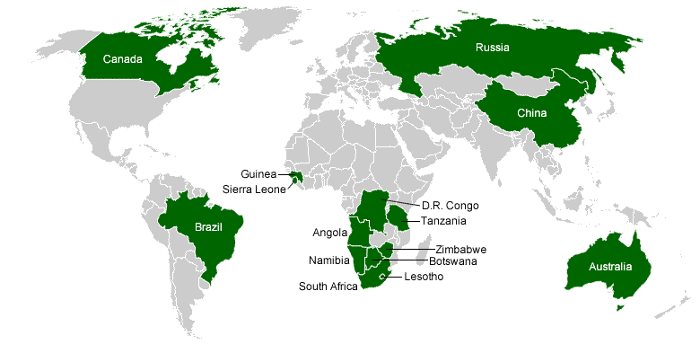
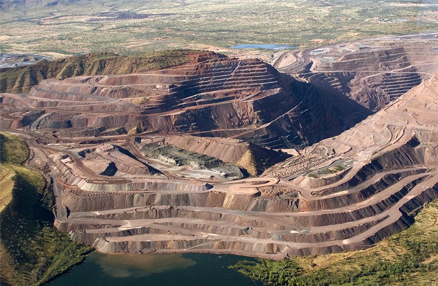

Diamonds Sourced from Different Continents
Did you know that diamonds are sourced from multiple continents? Yes! Some come from Africa. Others come from Australia. Overall, these gems come from 5 of the 7 continents!
 North American Mines
In North America, diamond mines are located in Canada as the map above indicates. The United States and Mexico appear to be devoid of these mines.
South American Mines
South American diamond mines are located in Brazil.
African Diamond Mines
Diamond mines in Africa are mainle in the Southern part of the continent. Countries in this continent include: Democratic Republic of Congo, Tanzania, Angola, Namibia, Zimbabwe, Botswana, Lesotho, South Africa, Guinea, and Sierra Leone. There are many diamonds that come from this continent, with a significant amount of controversy.
European Diamond Mines
European diamond mines are located in Russia. With a country that spans 11 different time zones, it may be argued that the majority of global diamond production may come from Russia.
Asian and Australian Diamond Mines
Diamond mines in Asia are located in the country of China. The entire continent of Australia (also a country in and of itself) has diamond mines.